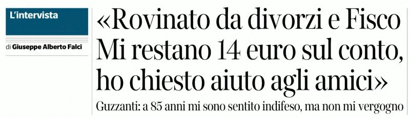

Gestire i flussi di cassa senza intoppi
Published initially on
LinkedIn the same day.
Ho letto un articolo che mi ha ispirato a scrivere questo articolo perché — sebbene questo tipo di storie finiscano raramente sulla stampa — sono assai frequenti in Italia. Quindi voglio portare testimonianza di qualche fragmento di vite vissute (o se preferite di laureati all'università della vita) che ho avuto modo di osservare nei miei ultimi 35 anni di persona in qualche modo coinvolta in attività che portano un reddito ma anche che comportano delle incombenze.
Il nocciolo della questione
Gestire i flussi di cassa senza intoppi è davvero molto importante. Gli americani dicono "Cash is the King" riferendosi al cashflow, e più in generala alla gestione dei flussi di cassa, appunto. In italiano popolare si potrebbe riassumere questo concetto con il popolare detto: "hai voglia a voler riempire il secchio sfondato".
Che poi è il motivo per il quale in tutte le mie attività, incluse quelle organizzate in società, ho sempre cercato di tenere la fiscalità sotto controllo - non evadendola o eludendola - ma applicando un principio sacrosanto per il quale NON si accettano e NON si tollerano cattivi pagatori fra i clienti, incluse le P.A. se non per cifre irrisorie rispetto al volume d'affari e comunque già aumentate di una percentuale relativo al rischio stimato di recupero credito - e difendendo saldamente il principio per cui le tasse e l'IVA si pagano solo DOPO aver incassato e nella misura dell'incassato.
Intelligenza piuttosto che furbizia
Il resto dell'ingegneria finanziaria e fiscale, per agevolare gli stakeholders in funzione di due parametri essenziali: garantire alle persone (aka non società di capitali) l'essenziale (creditori c.d. sociali ma nel senso autentico del termine) poi i fornitori in funzione della loro dipendenza dai flussi di cassa (invece di strozzarli non pagandoli, li aiuto ad affrontare quei loro clienti che adottano questo approccio garantendomi la loro fedeltà e un'ottima scontistica che sono sempre pronto a rinegoziare in cambio di tempi di consegna ridotti e controllo qualità) per il principio do-ut-des.
Per il quale io agevolo il loro business in maniera che loro possano agevolare il mio quindi dando alla negoziazione un tono di reciprocità piuttosto che di contrasto fra opposti interessi (il mio a pagare il meno possibile e il loro a farsi pagare il più possibile) ottenendo dei risultati che generalmente i miei concorrenti fanno "cartello" contro i miei privilegi di cliente.
Una roba per altro imbarazzante che in un particolare caso si è risolto con il fornitore che urbi-et-orbi dichiara solennemente agli insorti in favore dell'uguaglianza dei peones: chi paga immediatamente tracciabile viene servito immediatamente. Tutti muti e in coda per il loro turno. D'altronde, il contante è un problema di sicurezza per chi vende grandi volumi giornalieri.
Stabilire un ordine di priorità
Poi viene il turno dei soci di capitale quindi di rischio che se persone hanno già ricevuto una parte sufficiente a gestire i loro flussi di cassa e il resto in termini di partecipazione al rischio e all'utile che sarebbe il principio meritocratico del capitalismo economico reale se appunto non ci fosse la finanza a fare il bello e cattivo tempo con il denaro cartolare.
Il denaro cartolare (paper money) è quello privo di un collaterale e se pensate che i mutui basati su immobili non rientrino in questo contesto, perché appunto a garantire il mutuo c'è il solido mattone, allora vi ricordo la crisi-tragedia dei sub-prime loans americani che in confronto bond Parmat e Argentini spostatevi, e che ha generato il crollo dell'immobigliare residenziale anche in Italia.
Il regolare controllo dei flussi
Insomma come le fogne i flussi di cassa vanno gestiti senza intoppi, salvo non si abbia una peculiare perversione per affogare nel liquame.
Un principio che andrebbe insegnato almeno dalle scuole superiori perché mandare in giro gente che poi finisce a fare i dipendenti sottopagati perché non hanno saputo gestirsi i flussi di cassa — motivo per il quale lo Stato vuole l'IVA anticipata e i commercialisti non fanno resistenza a questa imposizione, salvo che il loro cliente abbia mezzi e/o capacità di auto-gestirsi — dopo aver aperto partita IVA.
Ignoranza e mancanza di disciplina
Non mancano fra questi quelli che piangono per il fisco, che comunque in Italia è un spregevole vampiro arroccato in un castello di infame burocrazia, ergo il paletto di frassino se lo merita tutto:
quelli che hanno ottenuto una "generosa" carta di credito per via del saldo in banca aritficialmente gonfiato dal fatto di aver rateizzato e/o posticipato i pagamenti al fisco e ai creditori per poi devastarne il "castelletto" in un night-club di periferia accanto al motel in cui si sono fermati a dormire in trasferta.
il socio che con la carta aziendale che paga per le "amanti" che NON è un problema di "debito" perché magari ci ha già depositato sul conto l'incassato, quindi tutto regolare oltre al fatto che ha il diritto e la responsabilità di usare quella carta/conto ANCHE per eventuali necessità personali, entro un certo limite, e i dipendenti di grande aziende hanno lo stesso benefit, perché ovviamente fa comodo, tipo con il dentista in caso d'urgenza.
la combinazione di quanto sopra unito alla moglie che scoprendo di essere cornuta, divorzia e il divorzio gli costa più del fisco, se poi in questo scenario ci hanno pure messo l'idea bizzarra di intestare alla moglie, magari pure impiegata pubblica, il gettito derivante dall'evasione fiscale, allora è la tragedia è servita.
Evitandomi l'incombenza di aggiungere altre e varie "cose" che potrete immaginare da soli, allora meglio che certi soggetti si mettano minigonna, calze a rete e vadano a fare felici i camionisti, tanto il risultato finale sarà uguale!
Conclusione
Impreparazione, ignoranza e furbizia unite alla scellarata moda tipicamente italica che sfruttare le debolezze altrui sia utile e persino un merito, alla burocrazia in stile sovietico, l'iper-bulismo del fisco italiano, l'opacità delle banche e degli operatori del credito, sono — nel loro complesso — un generatore di aneddoti e di PIL sprecato che tutto sommato la tragedia di Marcinelle che ha portato alla luce la gestione degli italiani come fossero bestie, può essere vista oggi come un amorevole invito da parte della realtà di cambiare rotta, cosa che il Titanic Italia si è ben guardato dal fare, anzi accelerando come un grave in caduta libera.
Share alike
© 2025, Roberto A. Foglietta <roberto.foglietta@gmail.com>, CC BY-NC-ND 4.0